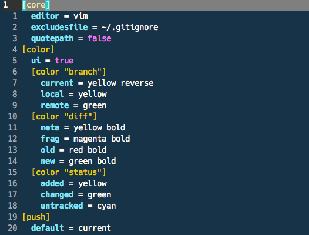
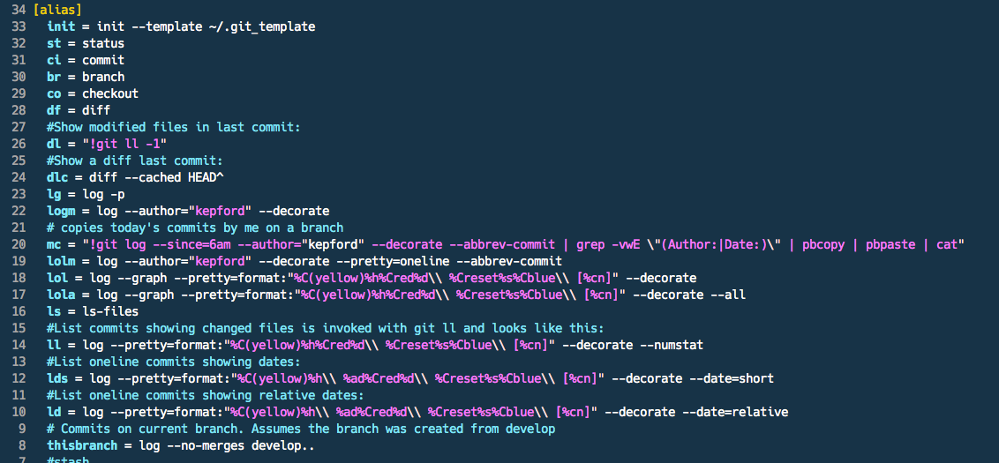
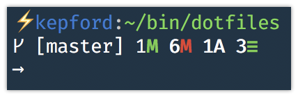

Cracking the Shell
Command-line for the Drupaler
Bob Kepford
Lead Architect
Publisher
Podcaster
What is the Shell?
A shell is a user interface for access to an operating system's services.
CLI (command-line interface)
Text command lines
Strengths of the CLI
Light on Resources
Concise
Scriptable for Automation
Weaknesses of the CLI
Commands are not obvious
Not beginner friendly
Why you should learn to use the Shell
67.8% to 98.3% of the Servers on the Net are using Unix or Unix like systems
"I have never regretted learning to use a command line tool."
~ Me
CLI's are everywhere
PHP
MySQL
Drupal
Composer
Node
Sass
Every JavaScript project
Scripts / Automation
Customization / Personalization
Make your computer work in the way you want it to.

.dot files
Configuration files.
Begin with a .
Live in ~
Making the most of Dotfiles
Symlink to a single directory
Track in Git
You can take your customizations with you.
Look at other dotfiles and steal liberally
Add small bits at a time and learn how to use them
Symlink
Pointer to an actual file.
ln -s ~/.source_file ~/bin/dotfiles/target_fileWhat configuration do we add to our dotfiles repo?
Only floss the teeth you want to keep.
~ My Dentist (Probably stole this line)
The Shell
Bash - gnu.org/software/bash:
the GNU Project's shell and is what I use.
ZSH - zsh.org:
a shell designed for interactive use, although it is also a powerful scripting language
Fish - fishshell.com:
a smart and user-friendly command line shell for OS X, Linux, and the rest of the family.
Environment / $PATH
Add things to your path
export PATH=~/bin:/usr/local/bin:/usr/local/sbin:/usr/bin:/bin:/usr/sbin:/sbin:/usr/X11/bin:/usr/local/git/bin:/opt/local/bin
# Type
$ someapp
# Instead of
$ ~/some/dir/drush/someapp.php
Aliases
Shortcuts for longer more complex commands.
alias h='history'
alias l='ls -lhGt' # -l long listing, most recent first -G color
alias g='git status'
Functions
function take() {
mkdir -p "$1"
cd "$1"
}
SSH
Secure Socket Shell
~/.ssh/config
Save yourself from trying to remember IP addresses and port numbers
Host server1
HostName 192.168.68.122
User napolean
Port 22
Host server2
HostName 192.168.68.123
User kip
Port 22
Privacy and Security
Don't put sensitive info in your Git repo if you plan to make it public.
Git
Don't use a GUI
Learn to use the commands
Git config
~/.gitconfig
Git aliases
Ignoring files
Per machine: ~/.gitconfig
Per project: .gitignore file in the repository
Per repo instance: .git/info/excludes
Git Hooks
.git/hooks
Customizing Git - Git Hooks
git-scm.com/book/en/v2/Customizing-Git-Git-Hooks
Pre-commit
Code linting.
Post commit
Do tasks like copy your commit message to your clipboard?
#!/bin/bash
# Copy last commit message copied to clipboard
git log --pretty=format:"%s %n%b" -1 HEAD | pbcopy
But I forget to add those to my repo
.git_template
In your ~/.gitconfig
[alias]
init = init --template ~/.git_template
[init]
templatedir = ~/.git_template
A good tutorial for setting this up. Logging Git commits with doing.
brettterpstra.com/2014/03/20/logging-git-commits-with-doing
Git tools
Tig
Text-mode interface for git.
Git HUD
A heads up display for your Git repos.
Vim
Why Vim?
I plan on coding for many years (What editor was hot two years ago again?).
I'm already in the shell.
Open source and available on all systems.
It will NEVER die.
I love using the keyboard (Vim is designed for the keyboard first).
Can Vim do ____?
Yes!
Plugins of Note
Vim Fugitive - Git
A Git wrapper so awesome, it should be illegal.
Gitgutter - Git
Vdebug - Xdebug Client for Vim
Vim Plugin For Drupal
Drush
Fast local server
Download and enable modules
Backup and import databases
Perform updates
Watch logs
Log in as any user and much much more!
Drush serve
drush serve
Serve Drupal locally using PHP's built in server.
Drush aliases
Drush commands against a specific Drupal site, even remote sites.
drush @youralias somecommand -ydrush use @youraliasdrush updb -yDrupal Watchdog Log
drush ws --tailDrupal Console
Another CLI for Drupal.
Generate boilerplate code
Interact with and debug Drupal.
Drupal Console
Debug routes.
Build modules, themes, plugins and more.
Generate content.
Much more.
Tmux - Bringing it All Together
tmux is a terminal multiplexerWhy Tmux
Seriously, Why
Detach and attach to terminal sessions without loosing state.
Isolate your terminal sessions.
Script terminal session layout based on project needs.
Tmux
Sessions
Windows
Panes
Tmux Sessions
Tmux Windows
Tmux Panes
Tmuxinator
Script and automate Tmux sessions.
Create and manage tmux sessions
Projects are Yaml files
Switch projects quickly
Resources
My Dot files - github.com/kepford/dotfiles
dotfiles - Unofficial guide to dotfiles on GitHub (dotfiles.github.io).
Craft your own IDE in the shell - Wynn Netherland - (vimeo.com/84183973)
Git - Resources
Learn Git branching - pcottle.github.io/learnGitBranching/
Got 15 minutes and want to learn Git? - try.github.io
Git precommit hooks - github.com/andrewmriley/drupal-site-precommit
Vim - Resources
Learning Vim in a Week - mikecoutermarsh.com/boston-vim-learning-vim-in-a-week
Let Vim Do the Typing - youtube.com/watch?v=3TX3kV3TICU
Tmux Resources
Efficient Drupal Development with Tmux and Tmuxinator